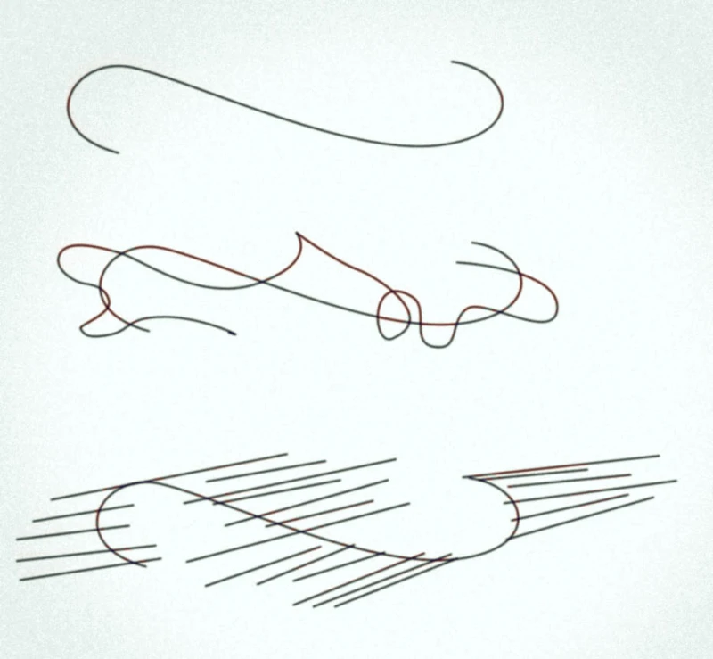

2022
This work emerges from my ongoing exploration of sound, subjectivity, and relationality. Rooted in both artistic practice and critical inquiry, it approaches listening as a way of thinking through complexity, where differences, tensions, and resonances become sites of meaning-making.
In the quest of deconstructing the hierarchical characteristic of dualisms, understanding how differences are produced and how they matter in materializing relations within phenomena; this podcast, a tripartite speculative sonic landscape, branches out from the ongoing research/project »Oscillating Dialogues«. The piece unfolds as a journey that explores how subjectivities, forces, or becomings come to find form through differential speeds, in harmony or dissonance, marking its beginning as the »chaos« in a mythical sense, and proceeding into the »fold«, expanding the topological nature of subjectivity.
MODULATIONS ON THE FLY is a series of resonances in sound, art, and philosophy. Students of Petra Klusmeyer’s »Research-Creation, Art Writing, and the Making of Podcasts« of HfK Bremen explore the sonic in its material and conceptual dimension. The podcasts will show you how.
— End of post